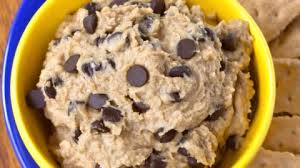

Dough
Dough fruit is a mythic fruit in blox fruits. My main is the awakend verstion. It is the best PvP fruit by far in the game because of it's stun and knockback. When fully awakened Dough is one of the best PvP fruits. The First,move awakened is called baked Dough it awakens to Missel Jab.
